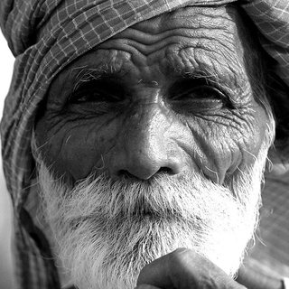

Listen to your teacher's story. Follow it on the map.
Check the map.
1. How many ways are there across the river?
2. Can you walk across the bridge?
3. Does the ferryman take people for free?
Task 2
Who is most responsible?
Think. Who is most responsible for what happened to her? Tell your partner why.
The wifeShe left the house.
The husbandHe worked through the night.
The friendHe let her walk home.

The ferrymanHe refused to take her.
The strangerHe was on the bridge.
Write your reason in one sentence. Start with If…
Task 3
What does it mean?
Read the sentence. Answer the questions.
If she had stayed at home, she would have survived.
1. Did she stay at home?
2. Did she leave the house?
3. Did she survive?
4. Is it about the past, now or the future?
5. Can anyone change what happened?
6. "She stayed at home": is that real or imaginary?
Task 4
The form
Complete the pattern.
If + subject + + , subject + + +
If she had stayed at home, she would have survived. (comma)
She would have survived if she had stayed at home. (no comma)
she'd stayed = she had stayed · she'd have = she would have
Not: If she would have stayed…
Task 5
Say it
Listen and repeat, from the end of the sentence back to the start.
survived
would have survived /ˈwʊd əv səˈvaɪvd/
she'd have survived
at home
stayed at home
if she'd stayed at home /ɪf ʃid ˈsteɪd ət ˈhəʊm/
If she'd STAYED at HOME, she'd have surVIVED.
Task 6
Match the two halves
In pairs, match each beginning to its ending. Who says each sentence?
1. If she had stayed at home,
2. If I had had time for my wife,
3. If we hadn't bought that house,
4. If she had taken enough money,
5. If I hadn't kept filling her glass,
6. If I had taken her on my boat,
7. If I hadn't escaped from the hospital,
8. If she hadn't been so lonely,
she wouldn't have had to cross the bridge.
she wouldn't have been hurt.
she wouldn't have left so late.
I wouldn't have had to work so hard.
I wouldn't have had the chance to hurt her.
she would have been able to take the ferry.
I would have gone home to have dinner with her.
would she have left the house?
Task 7
Finish the sentences your way
Complete each sentence with would / wouldn't have… Then compare with a partner.
If she had found a job in the city,
If he hadn't worked every evening,
If they hadn't bought the house in the forest,
If she had taken some money with her,
If the ferryman had broken his promise,
If her husband had come home that night,
Task 8
Rank them, and argue
Alone: rank the five from 1 (most responsible) to 5 (least). Then in groups: agree an order. You can only defend a position with If…
The wife
The husband
The friend
The ferryman
The stranger
Task 9
The twist
After the ranking: each person in the story stands for something. Your teacher will tell you what.Tap a person to see what.
The person you blamed most is what you value least. The person you blamed least is what you value most.
Trainer notes Tutor only
ConnectLiteThe story: made up for this lesson, on the shape of ‘The Alligator River Story’ in Simon, S., Howe, L. and Kirschenbaum, H. (1972) Values Clarification. New York: Hart. Lesson and tasks: Ramy Sakr, for Connect Lite (2026).